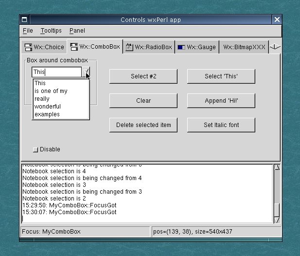
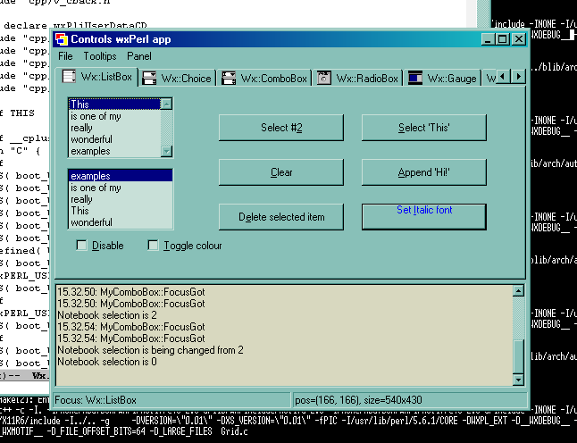
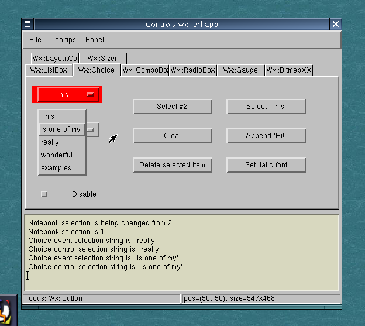

This is the "controls" sample from the wxPerl distribution (you can
find it in
samples/controls/controls.pl). It shows many of
the controls available in wxPerl.
Controls sample (Linux, GTK 1.2); Wx::ComboBox page

Controls sample (Microsoft Windows 2000); Wx::ListBox page

Controls sample (Linux, Motif); Wx::Choice
